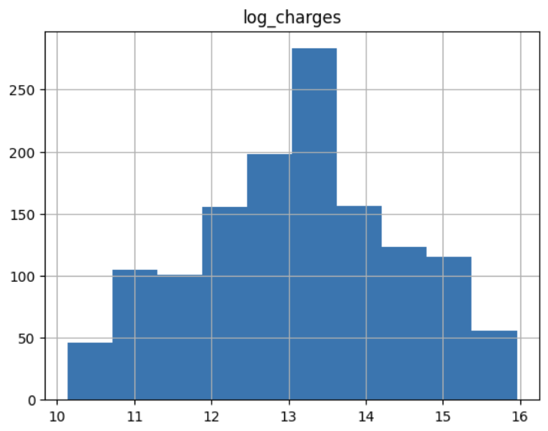
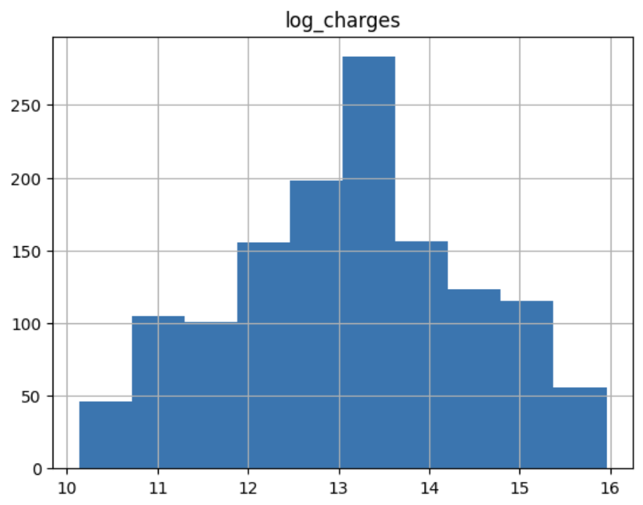

DevOps Deployment Analysis on Azure and AWS
This project explores how DevOps deployments perform across AWS and Azure, and how data can help uncover ways to make them faster and more efficient. As a data analyst, I focused on identifying patterns, building predictive models, and translating technical results into insights that DevOps and cloud teams could actually use.
What Problem Are We Solving?
As cloud adoption accelerates, organizations are investing heavily in DevOps practices to enable continuous delivery and scale operations. However, even
with modern CI/CD pipelines, businesses often face:
• Long and unpredictable deployment times
• Excessive resource consumption, inflating cloud costs
• Inconsistent performance across cloud providers
üîç Key Insights
- Insurance charges were highly skewed — applied log transformation to normalize.
- Top predictors: age, BMI, and smoking status.
- Gender and region showed minimal predictive power.
ü߆ Analytical Approach
- Performed EDA with histograms, boxplots, and a correlation heatmap.
- Created new feature
log_chargesto stabilize variance. - Built a linear regression model and evaluated performance with R² and MSE.
✅ Solution & Impact
Enabled fairer and more data-driven insurance pricing by predicting costs based on key health and demographic variables. Supports strategic underwriting and pricing.
üõ†Ô∏è Tools & Technologies
Python, Pandas, Scikit-learn, Matplotlib, Seaborn
 
